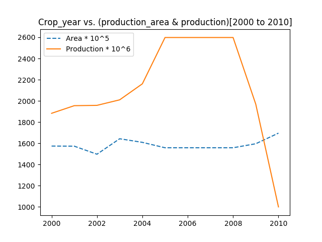
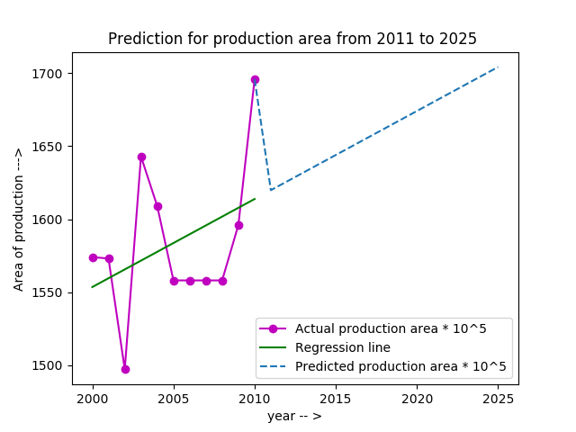
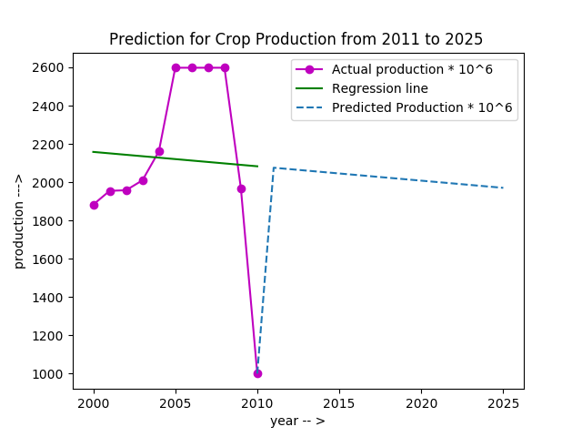

Data Analyis : Agriculture Prediction
Analyse the co-factors (like - rainfall,temperature etc ) related to agriculture

|
|
Data Analyis : Agriculture PredictionAnalyse the co-factors (like - rainfall,temperature etc ) related to agriculture |
|
Programming |
Co-factors Analysis:[1] Rainfall[2]Tempareture |
   |
|
[1] Print dimension of the data file [2] Print column names of the data file [3] Print available states in the data [4] Print districts of all states [5] Print production data [6] Print production area data [7] Plot area and production (without prediction) [8] Area prediction model and print growth rate [9] Production prediction model and print growth rate |
[1] Title: District-wise, season-wise crop production statistics. [2] Description: [3] Released Under : National Data Sharing and Accessibility Policy (NDSAP) [4] Contributor: Ministry of Agriculture and Farmers Welfare Department of Agriculture, Cooperation and Farmers Welfare Directorate of Economics and Statistics (DES) [5] Group: Crop Production Statistics [6] Sectors: Agricultural Produces [7] Published on Data Portal: February 13, 2014 |